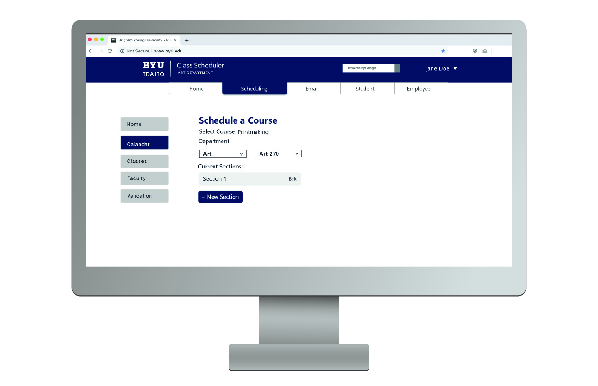
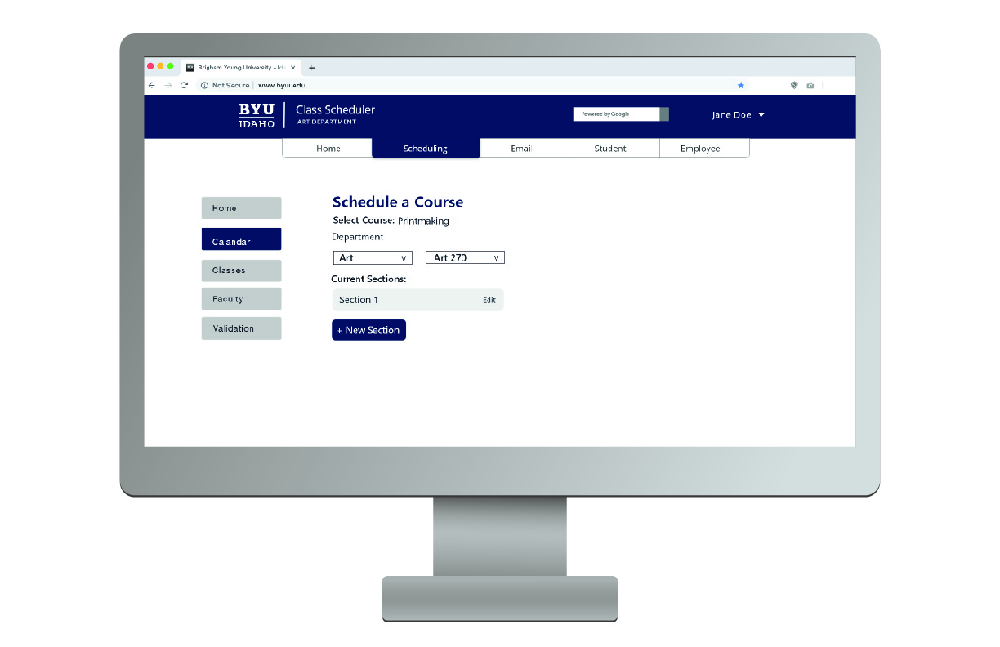

BYU-Idaho Course Scheduling
Project Description
I worked with a group of about five designers to propose a design solution that would improve the current registration system used by the department secretaries at Brigham Young University Idaho to schedule classes. Our goal was not only to make something that looked good, but also to design something that would be easy to use current and future department secretaries.
Problems with the Old System
The school's primary reason for needing a new system is that their current registration platform will not be supported in the near future. The old system is very confusing and the team in charge of course scheduling decided that this would be a good opportunity to have the interface redesigned to be more user friendly.
We met with one of the department secretaries who showed us the current system and process she uses to schedule courses for her department. The current system doesn't do much in the way of helping work out the schedule it is simply used to input classes into the system, and when inputting classes a lot of things are put in front of the user at one time, some of which are rarely used or set to default values that never change.
Things to change
- Hide information that is rarely changed
- Separate scheduling into small steps
- Make scheduling easier within the system
Prototypes and Testing
Paper Prototypes
When it comes to making a useable interface the best way to make sure it works it test it, so after discussing the problem we each drew out on paper what we thought would make a good interface for the registration system, and found people to have pretend like they were trying to schedule courses on the sketches we drew.
User Testing Scenarios
When testing people with these simple prototypes you can't really draw out every possibility, so we write up simple scenarios, that don't give any clues, about what the person testing needs to do so we can see if they do what we expect and where the flaws in our design are.
- You are the secretary for the art department, and it's time to schedule classes for spring 2019. The school has recently switched to a new system for course scheduling. Log into your account and find where to begin scheduling classes for spring semester of 2019.
- More student want to take Printmaking 1 with Carla Jimison. the course code for the class is ART 270. Due to the nature of the course it can only be held in the printmaking room, room 371 in the Spori building. Schedule a new section of this course at an available time with Sister Jimison as the teacher.
- You need to find a room to schedule the Readings course that Brian Memmott will be teaching. the course code for the class is ART 309. schedule the class in a room with an available 1 hour block of time from 8:00am - 9:00am on Monday, Wednesday and Friday in the Spori building.
- Once you have planned both classes, submit the schedule for approval.
Finding Available Rooms
One of our goals was to make it easier for the secretaries to find rooms where classes could be scheduled. Our original solution was to list the schedule for one day of all the rooms to use to find a room where a class could be schedules, but after some user testing and discussion we decided to switch it out for search function that would tell you what rooms are available at a specified time.
Digital Prototypes
Paper prototypes work really well for ironing out early problems, but after you get the obvious problems out of the way it's best to switch to something on a screen. Sometimes the reason people get confused while testing is because they don't think of doing something on paper that they would do on a screen, also color and other design choices made on a screen effect people's thoughts and actions, so we need to make sure our design choices don't make them confused while they're trying to achieve their objective.
Final Product
After several rounds of user testing we had a prototype that is easy and intuitive to use. We achieved our goals of hiding rarely used information, separating the process into smaller steps, and making it easier to find a time or room to schedule classes.
Walking Through a Scenario
To demonstrate a scenario I've added a slideshow bellow that shows the steps of the second scenario. Click the right arrow button to walk through the steps of the scenario.
In this scenario the user, first, selects the course they want to add, and click the new section button. Second, they select the teacher for the course and click the schedule section button. After that they select the building and room. Once they've selected a room they will be given the option to select a suggested schedule, or input it manually. In this example they use the suggested schedule button. Once the class is scheduled it will scroll down to show the calendar.
 


The End of the Project
The goal of the project was to present a solution to the course scheduling system that was easier to use. through design choices determined by user tests we were able to make something that was easy to understand.
I was able to learn a lot about designing a complicated scheduling system. It was a good learning experience for me and we were able to make something that is an improvement to the current system.